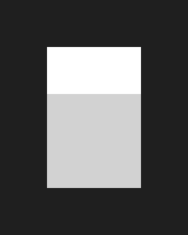

RELAY IS LISTENING LOCALLY
DRAG TO MOVEA thread, carried forward.
Relay watches approved context move between your coding assistants.
OpenCodeSOURCE APP
CONTEXT
RELAY·
APPROVED DATA
CodexDESTINATION
No handoff in progressWhen a package is loaded, its route and verification appear here.—
PreparedApprovedLoaded
Continue in OpenCode.
Choose a Codex chat, review its text, and check repository evidence before opening the next session.


Choose a chat
Local Codex sessions, most recently updated first.
Review the conversation
Common credentials are masked, but redaction can miss sensitive data. Tool outputs, reasoning and attachments are excluded. Preparing saves this reviewed text locally.
Review the handoff
OpenCode is opening.
OpenCode has been asked to retrieve your approved handoff. Relay will show activity when the package is requested; opening the terminal alone does not confirm retrieval.